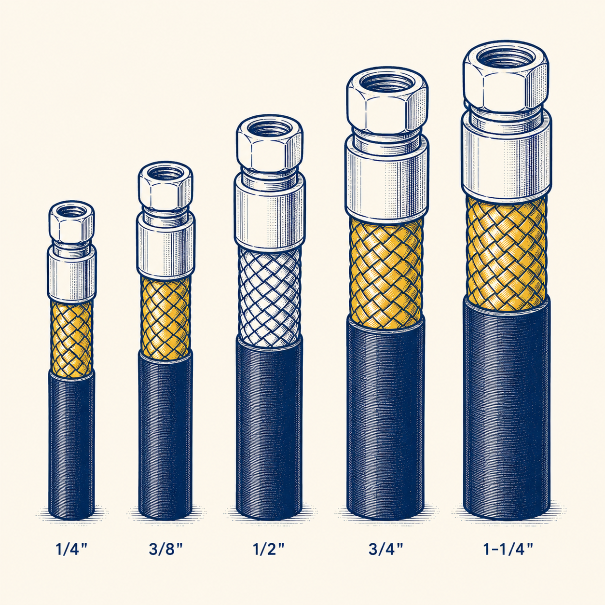
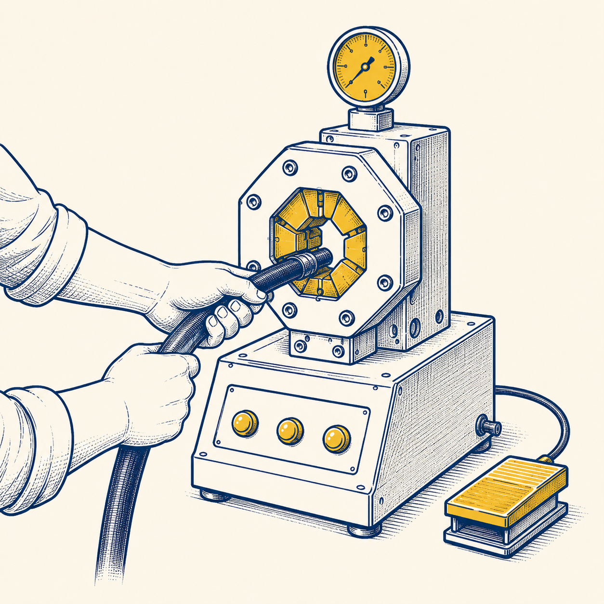
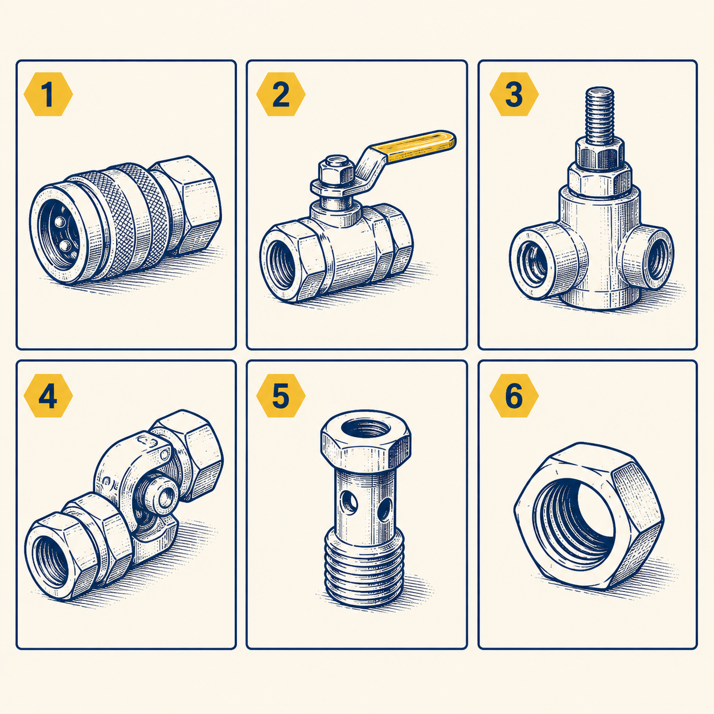
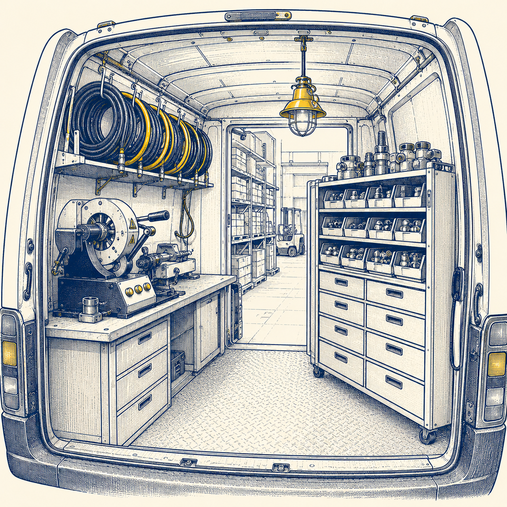
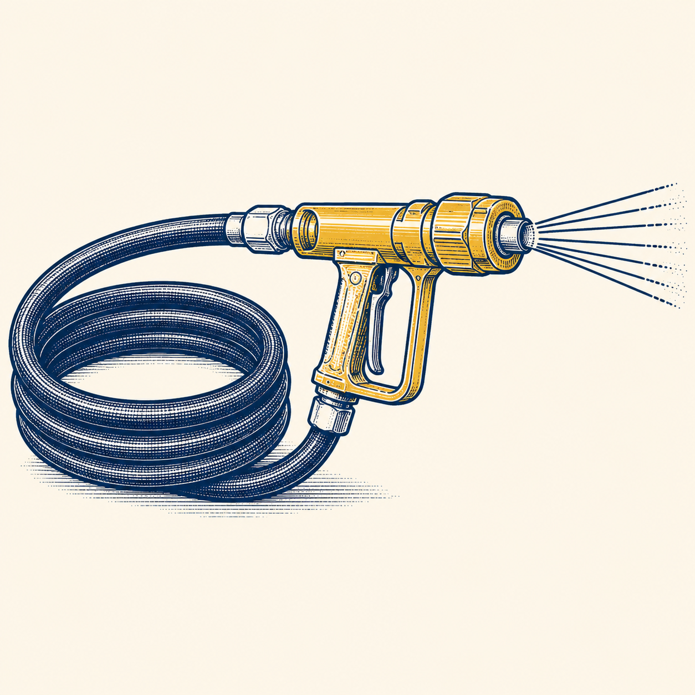
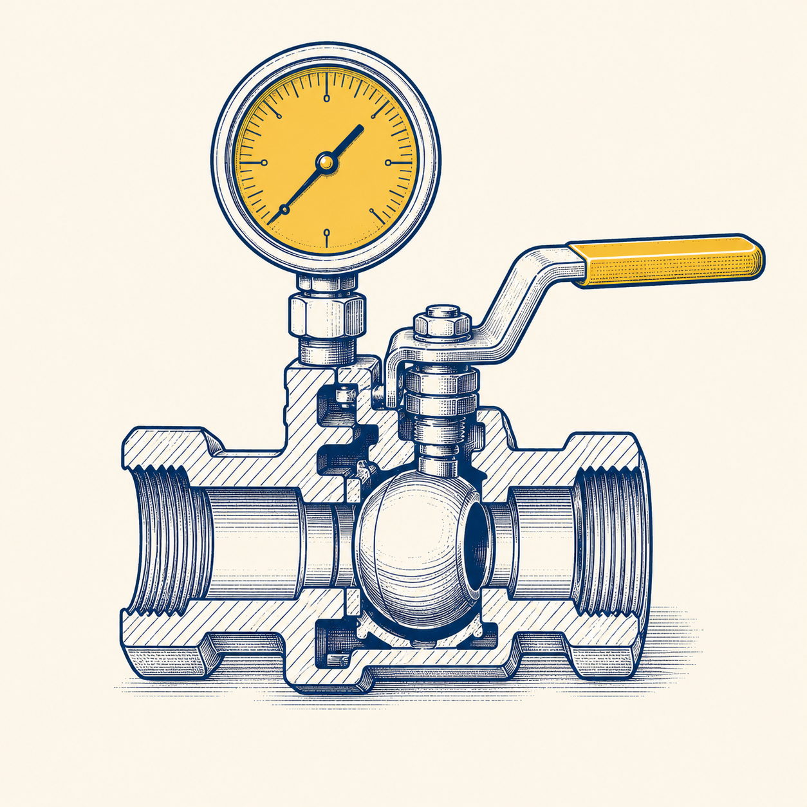

01 / WHOLESALE
HIGH-PRESSURE HOSE
高圧ホース・口金・カプラ・スイベル・
各種ホースの卸販売
標準品から特殊規格まで、産業現場で必要となるホース系統部品をフルラインアップで取り揃えています。国内外の主要メーカーと直取引のため、価格・納期ともに最適化が可能です。
流体を扱う、すべての現場へ。
ホース本体、口金、継手、バルブ、加締機、そして現場での出張製作まで。 オリトは「ホースまわり」のすべてを一括で揃えられる、専門商社です。

標準品から特殊規格まで、産業現場で必要となるホース系統部品をフルラインアップで取り揃えています。国内外の主要メーカーと直取引のため、価格・納期ともに最適化が可能です。

自社・現場で高圧ホースを加締めるための機械を販売しています。導入サポートから定期メンテ、消耗ダイス類の供給まで、長く使い続けるための体制をご用意しています。

JIS、ISO、SAE、BSP、NPT。国内外の規格に対応する継手・アダプタ類を取り揃えています。図面ベースのご相談、特殊形状品の手配にも対応します。

稼働中ラインのホース破断は1時間が損失数十万円。専用車に資材と加締機を積み、お客様の現場でアッセンブリー製作・交換まで完結させます。最短即日対応。

食品プラント、製鉄、車両洗浄など、各種洗浄用途のホース・ノズルを取り揃えています。耐圧・耐熱・耐薬品の用途条件からのご相談にも対応します。

ホース系統だけでなく、油圧回路を構成する周辺機器も一括でご提供。バルブ、圧力計、フィルタ、シリンダなど、回路設計に合わせて最適な組み合わせをご提案します。
用途・圧力・流体・取付寸法。お電話、メール、図面、現物いずれの形でも受け付けます。
最適な部品構成と納期をご提案。仕様や代替品の選定もまとめてお引き受けします。
在庫品は即日出荷、製作品も最短当日対応。緊急時は出張製作で現場へ駆けつけます。
納入後の運用相談、再発注、消耗品手配まで。長く付き合えるサプライヤーであり続けます。
図面ベース・現物ベース、どちらの相談も歓迎です。
TEL — 06-XXXX-XXXX / 平日 9:00–18:00